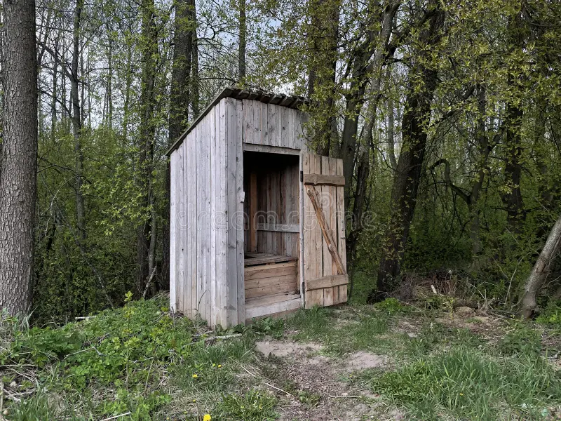

Об университете
История создания Малопендюринского Заборостроительного Института им. Василия Пупкина
В начале XX века, когда Россия только начинала задумываться о модернизации и индустриализации, в небольшом уездном городке Малопендюринск появился загадочный и до сих пор непонятый персонаж по имени Василий Пупкин. Он был известен своей страстью к заборостроению — искусству создания заборов, которое, по его мнению, являлось высшим достижением инженерной мысли.
История Малопендюринского Заборостроительного Института началась с того, что Василий Пупкин, будучи старшим знатоком заборов и гражданином с довольно эксцентричной репутацией, решил создать учебное заведение, которое бы занималось исключительно этой областью. Но для создания института ему не хватало денег, и он решил использовать свой уникальный способ привлечения финансирования: он отправил сотни писем с просьбой о спонсорской помощи в разные государственные учреждения, но все они были отклонены. Затем он обратился к частным лицам, и к его удивлению, один из самых богатых олигархов того времени, Григорий Дыркин, решил поддержать проект. Истинной причиной поддержки от такого значимого лица стали угрозы Пупкина упомянуть персону олигарха в университете. К счастью Василия, шантаж сработал и университет получил финансирование. Фамилия Дыркина так и не была упомнянута при создании университета: о его существовании узнали только из мемуаров Василия Пупкина, которые были написаны в пьяном бреду.
И вот, в 1923 году, в старинном здании, которое раньше был оборонительным укреплением специального назначения (пристанище Ильи Варламова и Максима Каца), был основан Малопендюринский Заборостроительный Институт. Основное здание получило обширное название: промышленный институт с загадочным деканом еврейской централизации. Институт сразу привлек внимание своим необычным названием и своим стремлением к совершенству в создании заборов. Изначально он был небольшим, с несколькими профессорами и только несколькими студентами, но со временем его популярность росла.

Экзамены и конкуренция
В 1940-е годы, когда страна переживала тяжелые времена, институт стал известен своей сложной системой вступительных экзаменов. Принципы поступления были просты: для того чтобы попасть в институт, нужно было сначала пройти сложнейший экзамен по математике, подготовленный самыми высококвалифицированными преподавателями. В связи с огромным количеством желающих попасть в ЗУ, конкурс невозможного уровня: минус пять человек на место. Это означало, что институт мог отчислить только 10 человек в год, а количество желающих было в 5 раз больше.
Из-за высокой конкуренции, местные жители начали рассматривать армию как более реальный способ обеспечения своей будущей жизни, так как вероятность поступления в институт была отрицательной.
Факультеты и кафедры
Институт быстро расширился и открыл несколько факультетов, каждый из которых специализировался на определенном виде заборов. В 1960-х годах был открыт факультет сетки Рабица, на котором обучали профессиональных изготовителей сетки Рабица. Затем появился факультет нанозаборостроения, который занимался разработкой уникальных веществ, включая знаменитое «дерьмо фенолосодержащее», за что его сотрудники получили пристальное наблюдение со стороны ФСБ. В скором времени образцы были изъяты в пользу мусорного контейнера. Разработка нового вещества до сих пор засекречена и считается тайной государственной важности
Аспирантура и курсы повышения квалификации
Несмотря на то что аспирантура в институте была почти неизвестна — ни один студент не выдерживал до пятого курса — административный аппарат продолжал работать, и слухи об аспирантуре распространялись. После закрытия факультета доскопиления в 1991 году, курсы повышения квалификации вновь открылись в 2000 году и стали известны своим уникальным подходом к обучению, включающим управление бюджетом и распилование финансов.
Расширение и мировое значение
Заборостроительный университет - это не просто место, где обучают построению заборов. Это учебное заведение мирового значения: уже сейчас филиалы ЗУ открыты по всему миру. Уже было открыто около 100 филиалов в России, Италии, Нидерландах и Мексике. В скором времени светило нашего ВУЗа, Василий Пупкин, откроет филиал ЗУ в Антарктиде. Всем ученикам будет предоставлено общежитие, а также уникальная программа от лучших педагогов региона.
Сегодня Малопендюринский Заборостроительный Институт им. Василия Пупкина — это легенда и символ высшего уровня образования в области заборостроения. Его выпускники работают в самых неожиданных местах, от операторов сантехнического оборудования до профессиональных инженеров-собирателей сахарного тростника за рубежом. И хотя институт не перестал быть источником мемов и шуток, его вклад в развитие науки и образования невозможно переоценить.
История возникновения названия
Своё нынешнее имя институт приобрёл в 1958 году после неудачного запуска бета-версии искусственного спутника земли, сделанного из сосновой доски, ветвей ольшаника и берёзовых прутьев. Спутник (неожиданно для всех) сгорел при запуске, однако партия и правительство всё равно отметили вклад сотрудников института в развитие отечественной космонавтики. Институту было присвоено имя Василия Пупкина, кафедру соснового доскописления в полном составе отправили в Сибирь, изучать строение хвойных пород деревьев, а ректора наградили орденом Ленина и с почётом проводили на пенсию. А самому институту запретили близко подходить к космической тематике.
В 2024 часть прогрессивного профессорско-преподавательского состава института выступила с инициативой присвоения институту ордина Дарта Вейдера и наградить именем Сенатора ПолуПотина. После долгих дебатов было решено оставить всё как есть. Решающим словом в этой дискуссии стало слово декана факультета философии заборостроения М. И. Плетнёва-Изгородского, который выдвинул гипотезу о том, что ПолуПотина переименуют в Василия Пупкина в знак признания его вклада в строительство международных рвов и заборов, и институту придётся переименовываться обратно.
Интересные факты
Когда социалистическое отечество оказалось в опасности во время великой демократической Американско-Узбекской революции, Пендюринск вместе со всем недвижимым имуществом и населением был эвакуирован за Урал, в западносибирские болота. После окончания войны имущество перевезли обратно на место, где раньше стоял Пендюринск, однако от этого места осталось только одно кукурузное поле, которое по причине его небольших размеров переименовали в Малопендюринск. При этом имущество, профессура и студенты Пендюринского Института Заборостроения и Доскопиления по пути из-за Урала отстали от поезда, затем сбились с дороги и пропали без вести. Вместе с ними пропали все методические пособия по строительству заборов и пилению досок. Это было одной из крупнейших потерь СССР. После этого отечественное строительства заборов пошло не тем путём, а пиломатериал потерял былую прямизну. В результате этого казуса, российскую национальную школу заборостроения и доскопиления пришлось возрождать на пустом месте под новым наименованием